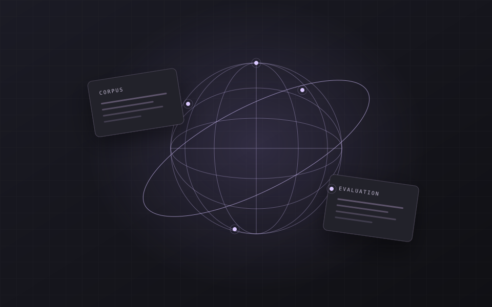
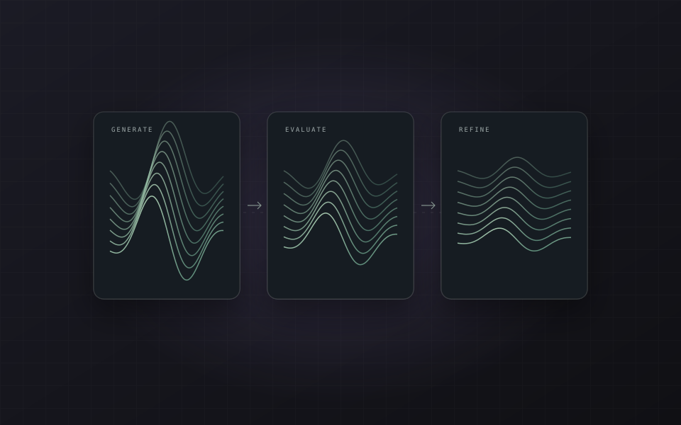
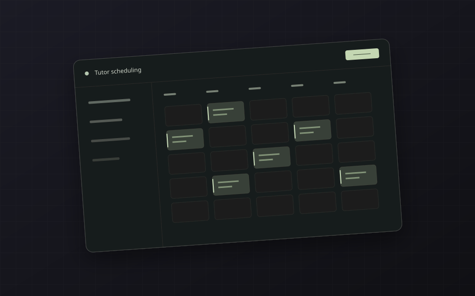

Bias in AI Travel Narratives
↗An end-to-end study of cultural and representational bias in LLM-generated travel narratives, comparing human annotations with automated safety evaluations.
HELLO, I’M BHASKAR AKKENA
Building reliable systems and evaluating how language models behave.

An end-to-end study of cultural and representational bias in LLM-generated travel narratives, comparing human annotations with automated safety evaluations.

An evolutionary search framework that iteratively refines LLM responses, combining toxicity evaluators with context-aware semantic scoring.

An RIT capstone with GCCIS automating tutor hour tracking, scheduling, and session management through backend APIs and an existing SQL database.